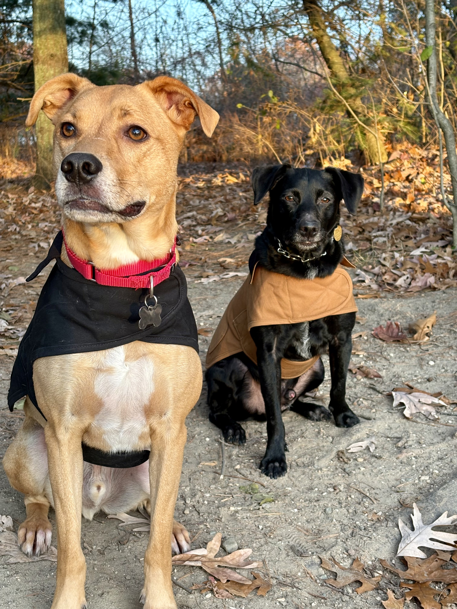

James Costello
I turn fragmented, manual operations into automated, data-driven systems. Engineer-turned-operations-leader with an Executive MBA — currently leading a global support organization at KLA.
- Global support operations
- BI & automation (Snowflake · SQL · Power Platform)
- Cross-functional leadership
- Financial & cost modeling
Side Projects
Projects I build outside of work — each leaning on a different strength from my day job: technical depth, business & finance, or data & automation.
More projects
About
I’m a service-operations leader at KLA, where I run a 15-person global support organization across four countries on a $2.5M budget. My job is to make highly technical operations run on data instead of gut feel — escalation systems, BI dashboards, and automation that replace manual tracking with real-time visibility.
I started as an engineer — metrology, then new-product introduction — and an Executive MBA pulled me toward the business side. What’s a little unusual is that I build the systems myself: the AI-driven escalation web app, the Snowflake-backed reporting, the tooling that makes the work measurable. The side projects above are that same instinct, off the clock.
Outside of work I’m kept very busy by my wife Kristen, our son Ernest (turning three this week), and our two dogs, Bob and Garvey.

Operate
- Global support orgs
- Escalation management
- NPI & service readiness
- Budget ownership ($2.5M)
Build
- BI dashboards & KPIs
- Snowflake · SQL · APIs
- Power Platform
- Web apps & automation
Lead
- Matrixed teams, 4 countries
- Cross-functional influence
- Exec / C-suite alignment
- Financial & cost modeling